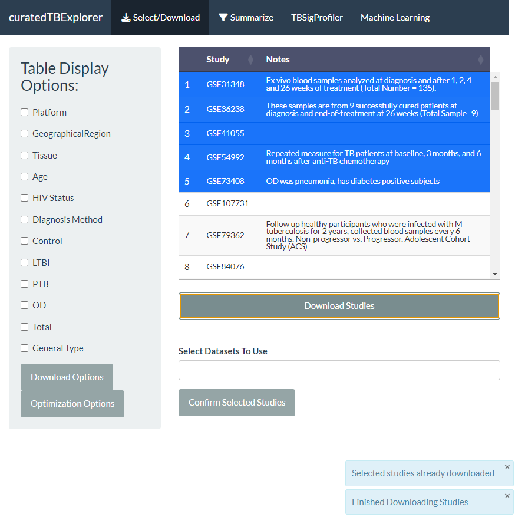

CuratedTBData is a R data package that is accessible via Bioconductor and GitHub. This program facilitates integrative studies across TB gene expression datasets by improving the reliability and replicability of signature construction and validation. For research purposes, standardized gene expression measurements and clinical annotations are currently provided by the curated TBData. MultiassayExperiment objects, which effectively manage the raw data, several normalized versions of the data, metadata, and certain intermediate analysis findings, are where these data are maintained in R. We have reprocessed all 49 datasets and created standardized workflows for data preprocessing and annotation. In addition, the curatedTBData offers capabilities for subsetting and aggregating the transcriptome datasets with currently available tools, like ComBat and ComBat-Seq. In order to showcase the usefulness of the curatedTBData, we carried out an organized analysis and verification of several published TB gene signatures derived from blood. We investigate the prediction power of TB gene signatures in relation to distinguishing PTB from LTBI and healthy individuals (Control) in the 49 carefully selected studies. To train and assess gene signature ensembles, we also leverage dataset and datatype aggregation methods that are integrated into curatedTBData and are based on our prior research. Moreover, we demonstrate the use of an ensemble learning approach that combines the predictive power of several gene signatures.
Before Installation
- Install BiocManager and related packages
if (!requireNamespace("BiocManager", quietly = TRUE))
install.packages("BiocManager")
BiocManager::install("DESeq2", update = TRUE, ask = FALSE)
BiocManager::install("GenomicRanges", update = TRUE, ask = FALSE)
BiocManager::install("MultiAssayExperiment", update = TRUE, ask = FALSE)
BiocManager::install("SummarizedExperiment", update = TRUE, ask = FALSE)
BiocManager::install("TBSignatureProfiler", update = TRUE, ask = FALSE)
BiocManager::install("curatedTBData", update = TRUE, ask = FALSE)
BiocManager::install("scran", update = TRUE, ask = FALSE)
BiocManager::install("SEtools", update = TRUE, ask = FALSE)Installation
The curatedTBExplorer requires R Version 4.1.
- Install the development version of the package from Github:
if (!requireNamespace("devtools", quietly=TRUE))
install.packages("devtools")
devtools::install_github("wejlab/curatedTBExplorer")If the installation fails, try:
options(timeout=400)Content Summary:
Select/Download
Summarize
TBSigProfiler
Machine Learning
The select and download page is where the user selects the datasets he wants to download and use.
The summarize page is used for the filtering of data as well as the visualization of the data.
When filtering data here, you will be removing certain samples based on chosen filter conditions.
The TBSigProfiler page lets us view how effective pre-existing gene signatures are on your selected dataset.
In addition, the user can add the gene signatures that they generate in the machine learning page and compare them to existing gene signatures.
The machine learning page is where the user can generate gene signatures using machine learning algorithms on the data from selected studies.
Steps To Use Each Page
Select/Download
- Select the studies you want to use through the table and press the download button. 
- Once the download is complete, select the datasets you want to use out of the downloaded ones and press the confirm selected studies button.
- (Optional:) If there are covariate options for batch correction, you can press the confirm covariates button to perform batch correction on the selected data.
- Now you can move on to the filter page or skip to the machine learning page
Summarize
- Select a covariate to filter by in the "Filter By" dropdown box. Then select a status in the next dropdown box. Ex. Filter By:Gender, Gender:Female.
- Once you are satisfied, press the "Add Filter" button. Keep in mind, you can add multiple filters before applying them
- Press the "Apply Filter" button to apply your filters to your dataset
- (Additional Info:) You can press the reset button to restore your dataset back to it's original form
- Once you are satisfied with your data, you can move on to the TBSigProfiler page or skip to the machine learning page
For numberical covariates like age, it'll display a range instead of a dropdown box.
The filter works by KEEPING the samples that have covariates with matching values. This means that if you apply a filter "Gender: Female", your data will only contain samples from females.